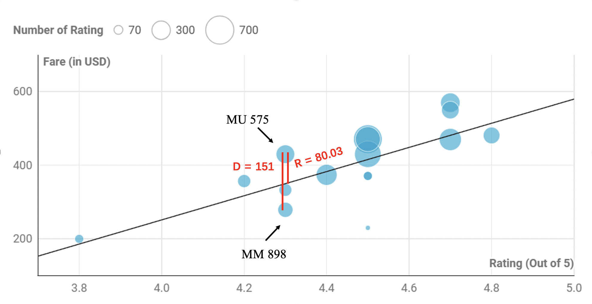
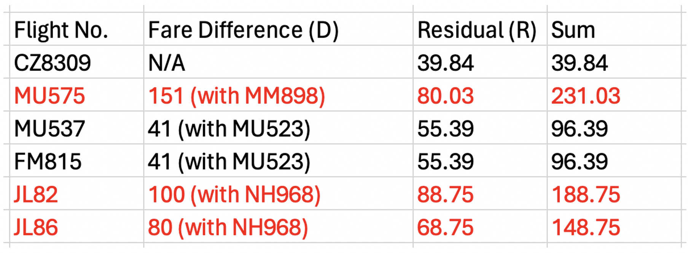

Next, we move on to the second round, in which we will compare flights with similar ratings.
Are flights with lower ratings necessarily worse?
This is a scatterplot showing the relationship between the number of ratings of each flight and its corresponding rating.
The overall shape of the graph looks like a square root function. When there are only a few ratings, the ratings tend to be low. In other words, some low ratings may be biased, so flights with low ratings are not necessarily bad, which is why we don't use flights with fewer than 40 ratings in our comparison process.
Is there a correlation between rating and fare?
This is another scatterplot showing the relationship between the average ratings of each flight and their corresponding fare.
From this scatterplot, we know that there is a positive correlation between rating and fare, and we draw a trend line to describe this correlation. Here we have the equation of our trend line, and this equation will be very useful later on when we compare flights:
Y (fare) = 328.18X (X = rating) - 1061.2
How do we filter our flights?
Now we can filter our flights based on two factors: D and R. D is the price difference between the selected flight and the lowest fare flight of the same rating. R is the price difference between the selected flight and flight of the same rating estimated by the trend line. If the sum of D and R is greater than 125, we will eliminate the selected flight.
We will use MU575 as an example. MU575 has a rating of 4.3. Among the flights with a same rating of 4.3, the flight with the lowest fare is MM898, so D is the price difference between MU575 and MM898, and our calculated result is 151. According to the equation of our trend line, the fare of the flights with 4.3 rating should be about 350 USD, so R is 430, which is the fare of MU575, minus 350, that is, 80. Now we add D and R together, and the sum is 231.03, which is greater than 125, so we eliminate MU575.
Round 2 Result
Using similar methods, we can create a result table and eliminate JL82 and JL86.
Here are the candidates that are still in the tournament after round 2:
- Air China: CA 919/923/929
- All Nippon Airways: NH 920/968
- China Eastern: MU 523/537
- China Southern: CZ 8309
- Jetstar Japan: JQ 36
- Juneyao Airlines: HO 1385
- Peach Aviation: MM 898
- Shanghai Airlines: FM 815
- Spring Airlines: 9C 6217